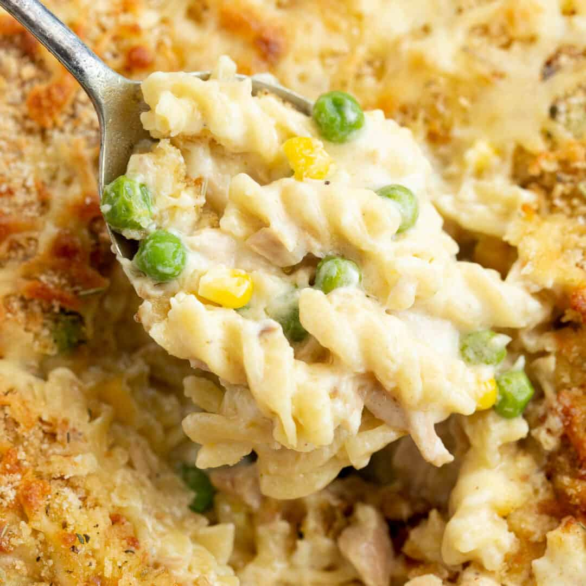

Tuna Mornay

A cheesy Mornay with peas and corn. A great quick dinner that has everything in one dish.
Ingredients
- 1/2 cup uncooked rotini pasta
- 1 tablespoon butter or margarine
- 2 tablespoons all-purpose flour
- 1 1/2 cups milk
- 2 cups shredded Cheddar cheese
- 1 cup frozen green peas
- 1 cup frozen corn kernels
- 2 (7 ounce) cans tuna, drained
- salt
- 1/2 cup bread crumbs
Steps
- Preheat the oven to 350 degrees F (175 degrees C). Bring a pot of lightly salted water to a boil. Add the pasta and cook until tender, about 8 minutes. Drain.
- Meanwhile, melt the butter in a small saucepan over medium heat. Stir in the flour until smooth. Gradually mix in milk so that no lumps form. Stir constantly until the mixture boils, then mix in half of the cheese. Add the peas, corn and macaroni. Drain the tuna, leaving a small amount of liquid to keep it moist. Flake with a fork and stir into the cheese mixture. Transfer to a casserole dish and top with the remaining cheese. Sprinkle breadcrumbs over the cheese.
- Bake for 20 minutes in the preheated oven, until sauce is bubbly and cheese is browned.